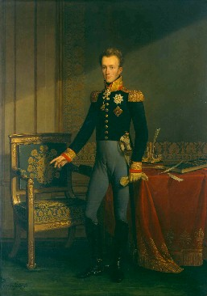

Opdracht: My Personal Home Page
Nathan van Saksen-Coburg
Dit is mijn persoonlijke homepagina, waar ik mijn persoonlijke informatie, hobby's en interesses zal opsommen.
Persoonlijke informatie:
- Volledige naam: Nathan van Saksen-Coburg II
- Adres: Kasteel van Laken, Koninklijk Parklaan 1, 1020 Brussel
- Telefoonnummer: 0123456789
- E-mailadres: nathanvansaksencoburg@gmail.com
- Foto/Portret:

Hobby's:
- Waterpolo: een watersport die wordt gespeeld met een bal in een zwembad. Voor meer informatie volg deze link.
- Schaken: een strategisch bordspel voor twee spelers, waarbij het doel is om de vijandelijke koning schaakmat te zetten. Voor meer informatie volg deze link.
- Paardrijden: het berijden van een paard door een persoon – de ruiter – die op de rug van het paard zit. Voor meer informatie volg deze link.
Interesses: